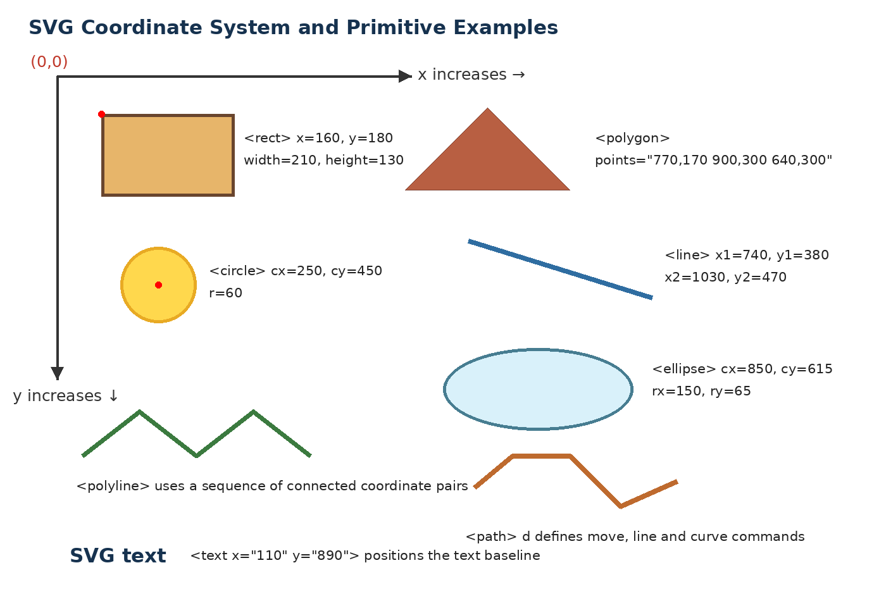
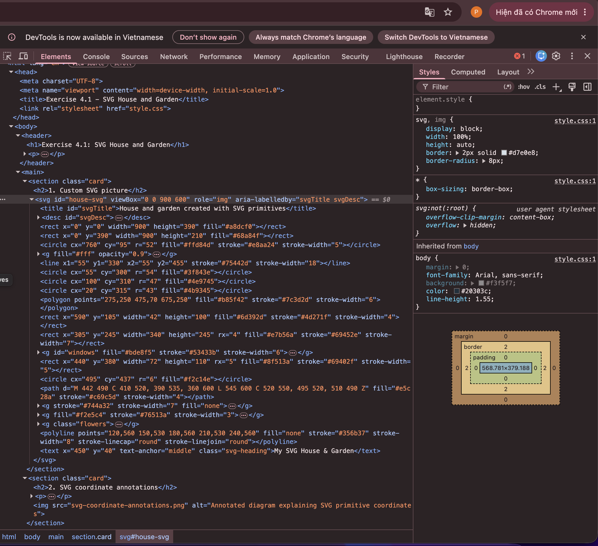

What I built.
SVG primitives.
A house and garden drawn with rect, circle, line, ellipse, polygon, polyline, path and text, with windows grouped using <g> and translate.
Exercise 4.4CSV into D3.
d3.csv() with typed rows, sorted by count.
Exercise 4.5Data binding.
selectAll, data and join create one group per brand.
Exercises 4.6 & 4.7Scales and labels.
scaleLinear sizes the bars, scaleBand spaces the brands, and each bar gets a name and a value.
Exercise 4.1
SVG house and garden.
Every shape type, one scene. The origin sits at the top-left; x grows right and y grows down.
Coordinate system
Each primitive annotated with the attributes that place it.

Group and transform
Both windows live inside one <g>, so they share fill and stroke. Each is positioned with translate.
<g id="windows" fill="#bde8f5"
stroke="#53433b" stroke-width="6">
<g transform="translate(350,295)">…</g>
<g transform="translate(515,295)">…</g>
</g>
Exercises 4.3 – 4.7
TV models by brand.
Loaded from exercise4_data.csv, sorted, bound to rectangles and scaled to fit.
Exercise 5
Three charts, three questions.
A vertical bar chart with axes, a line chart with area and points, and a donut chart, each in its own script.
Which screen type uses the most energy?
Average annual energy use of 55-inch TVs by screen technology.
How has electricity cost changed?
Average spot price in Australia, 1998–2024.
What sizes of TV are on the market?
Share of models: small < 40", medium 40–65", large > 65".
Exercise 6
Interactive charts.
Filter both charts, re-scale the histogram axis, and hover to inspect individual TVs.
Exercises 6.1 & 6.2
Energy use distribution.
Filter by screen technology and size (small < 40", medium 40–65", large > 65"). The y axis re-scales; hover a bar for its count.
Exercises 6.3 & 6.4
Size vs energy.
Each dot is one TV model. Filter by screen technology; hover for brand, model, size and consumption.
The numbers.
–
Brands in the data set
–
TV models counted
–
Brand with the most models
Share held by that brand
Library
D3 v7
Scales
scaleLinear (x), scaleBand (y)
Data
data/exercise4_data.csv